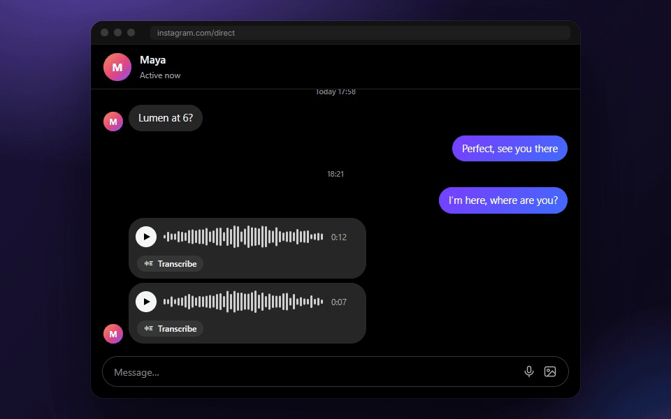
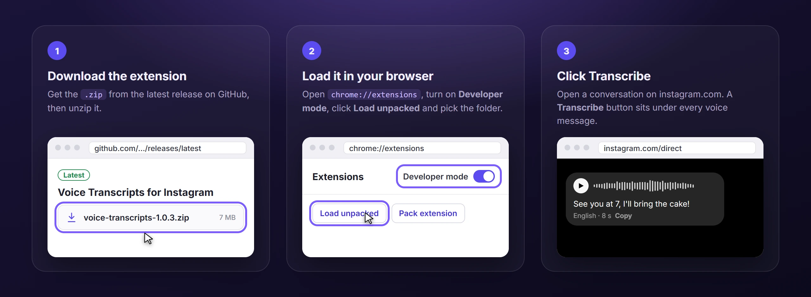
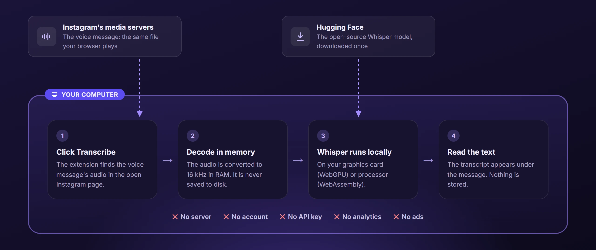
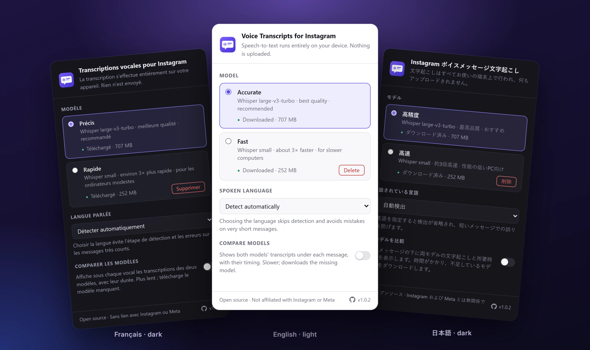

A browser extension that adds a Transcribe button under every Instagram voice message. Whisper turns it into text in seconds, right on your computer. Nothing is uploaded.
Une extension de navigateur qui ajoute un bouton Transcrire sous chaque message vocal Instagram. Whisper le transforme en texte en quelques secondes, directement sur votre ordinateur. Rien n'est envoyé.

Instagram's own transcription often fails with "Unable to transcribe" and isn't offered everywhere. This one works for every voice message.
La transcription d'Instagram échoue souvent (« Unable to transcribe ») et n'est pas proposée partout. Celle-ci fonctionne pour tous les vocaux.
Transcription runs on your computer. No server, no account, no tracking.
La transcription tourne sur votre ordinateur. Ni serveur, ni compte, ni pistage.
Whisper large-v3-turbo handles accents, slang and background noise.
Whisper large-v3-turbo gère les accents, le langage familier et le bruit de fond.
The language is detected automatically for every message.
La langue est détectée automatiquement à chaque message.
Uses your graphics card through WebGPU, or the processor otherwise.
Utilise votre carte graphique via WebGPU, sinon le processeur.
Paste a transcript into a note, an email or a translator.
Collez une transcription dans une note, un e-mail ou un traducteur.
Accurate or fast model, fixed language, compare mode, disk space manager.
Modèle précis ou rapide, langue fixe, mode comparaison, gestion de l'espace disque.
The extension isn't on the Chrome Web Store yet, so you load it yourself. It's quick.
L'extension n'est pas encore sur le Chrome Web Store : vous la chargez vous-même. C'est rapide.

voice-transcripts-x.y.z.zip from the latest release.Documents/Voice Transcripts.chrome://extensions (edge://extensions in Edge).voice-transcripts-x.y.z.zip depuis la dernière version.Documents/Voice Transcripts.chrome://extensions (edge://extensions dans Edge).Only two downloads, both read-only: the voice message itself from Instagram, and the open-source model once. Nothing is ever sent, and transcripts aren't stored.
Seulement deux téléchargements, en lecture seule : le vocal lui-même depuis Instagram, et le modèle open source une fois. Rien n'est jamais envoyé, et les transcriptions ne sont pas conservées.

Choose the model, set the spoken language or compare both models. The panel follows your browser's language and theme.
Choisissez le modèle, fixez la langue parlée ou comparez les deux modèles. Le panneau suit la langue et le thème de votre navigateur.

Yes, and it will stay that way. The source code is open, there is no paid plan, no ads and no account, and the license forbids anyone from selling it. It runs on your computer, so it costs nothing to run.
No. It's an extension for desktop browsers based on Chromium (Chrome, Edge, Brave, Opera, Vivaldi, Arc) on the instagram.com website. Firefox and Safari aren't supported.
The extension doesn't post, like, send or automate anything, and makes no extra requests to Instagram. It reads the conversation already open in your browser and downloads the voice message like the player does. It's an unofficial tool, not affiliated with Instagram or Meta.
On a mid-range laptop with integrated graphics, a 5-second message takes about 9 s and a 20-second one about 14 s. The first transcription is slower because the model is downloaded once.
About 700 MB for the Accurate model, or 250 MB for the Fast one. You can see and free this space from the settings.
Oui, et ça le restera. Le code source est ouvert, sans offre payante, sans publicité et sans compte, et la licence interdit à quiconque de le vendre. Il tourne sur votre ordinateur, il ne coûte donc rien à faire fonctionner.
Non. C'est une extension pour les navigateurs d'ordinateur basés sur Chromium (Chrome, Edge, Brave, Opera, Vivaldi, Arc), sur le site instagram.com. Firefox et Safari ne sont pas pris en charge.
L'extension ne publie, n'aime, n'envoie et n'automatise rien, et ne fait aucune requête supplémentaire à Instagram. Elle lit la conversation déjà ouverte et télécharge le vocal comme le lecteur. C'est un outil non officiel, sans lien avec Instagram ou Meta.
Sur un portable de milieu de gamme avec puce graphique intégrée, un vocal de 5 secondes prend environ 9 s et un de 20 secondes environ 14 s. La première transcription est plus lente car le modèle est téléchargé une fois.
Environ 700 Mo pour le modèle Précis, ou 250 Mo pour le Rapide. Vous pouvez voir et libérer cet espace depuis les réglages.
Free, private and open source.
Gratuit, confidentiel et open source.